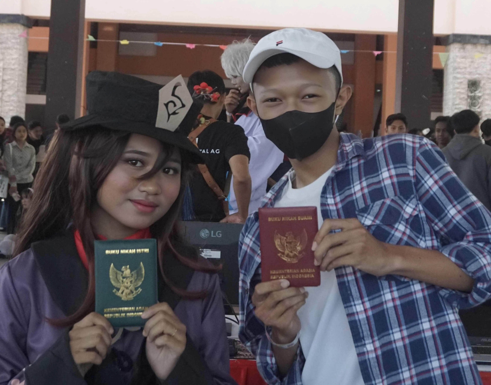
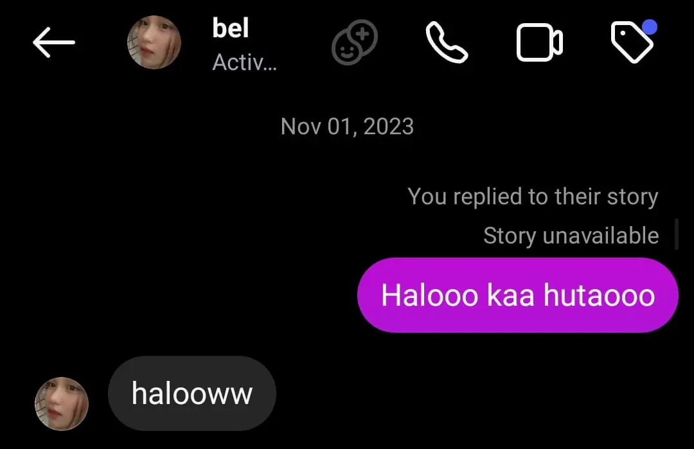
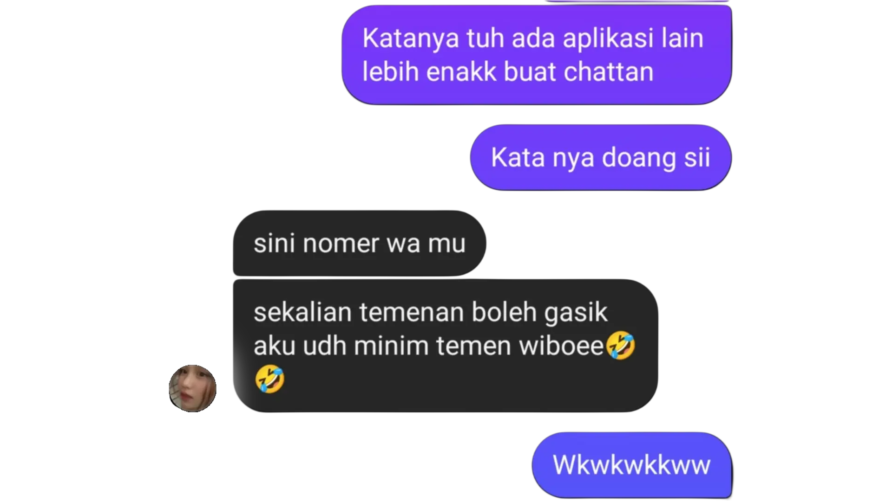
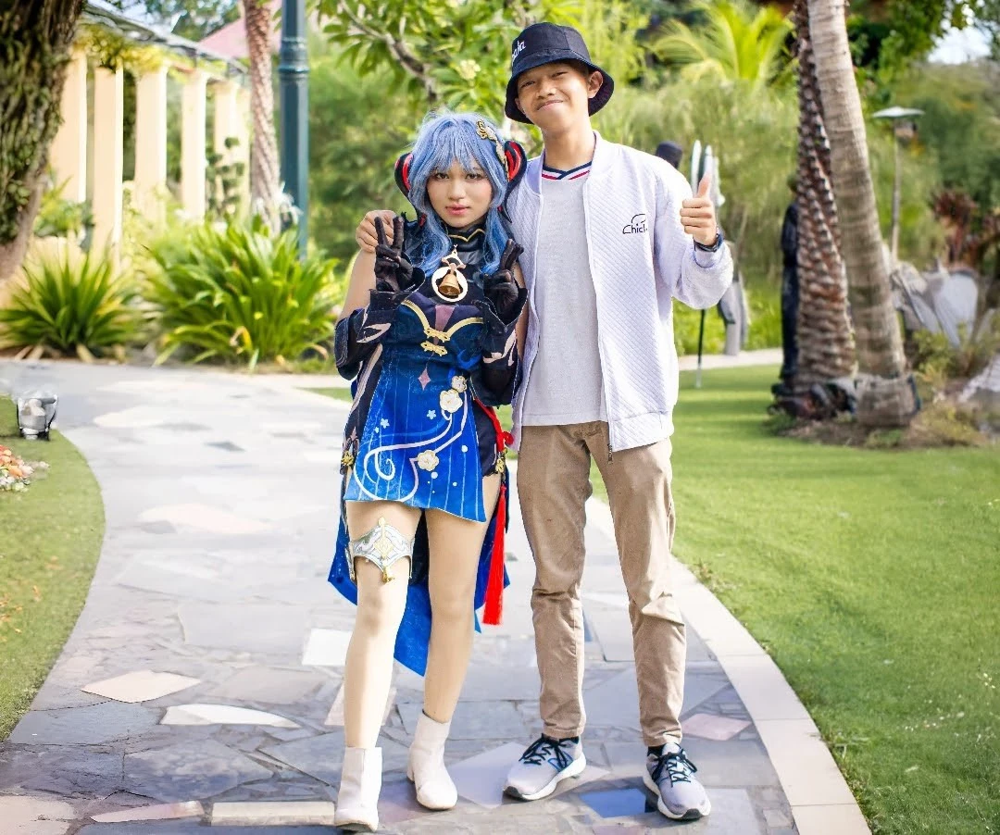
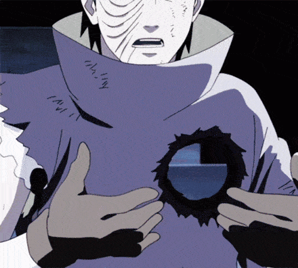
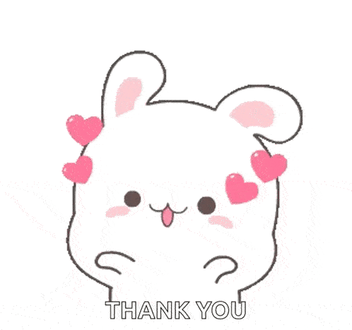
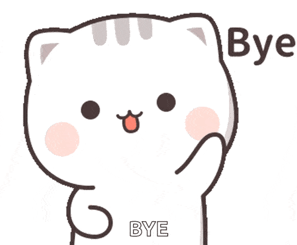
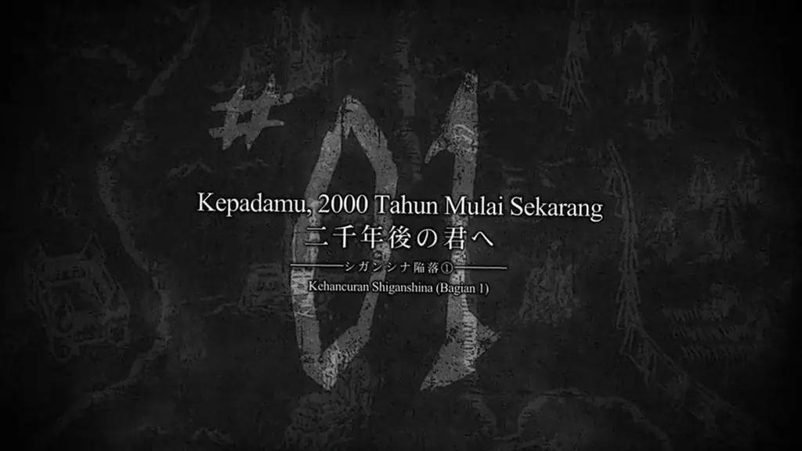
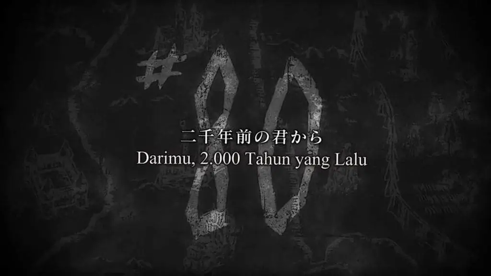

Halo Nabilaa... Welcomee, ini semua adalah pesan spesial dariku untukmu.
Ada yang ingin aku sampaikan padamu. Tekan tombol "Next" untuk membaca pesan selanjutnya yaa

Bertemu dengan tidak sengaja, FYI that is my first time at Cosplay event, first time selfie with cosplayer, and first time i met u
Mungkin pas itu waktu terasa sangat singkat, tapi waktu yang sangat singkat itu awal dari cerita selama 2 tahun lebih.
honestly im so nervous waktu itu, aku bukan wibu dan tiba tiba dipaksa poto sama hutao 😭😭.

sekitar 2 tahun lalu, siapa sangka coba, berawal dari sebuah DM reply SG wkwkwk,
jujur sekarang kalo baca dmnya malu banget sama diri sendiri 😭😭
kobisaa aku dulu nge dm kaya gitu 😔😔

dan kalo di inget inget, secara teknis kita hts hampir 1 taunn wkwkkw,
dari aku sebelum berangkat magang, sampe aku pulang magang, dan kita baru ketemu lagi di event cosplay itu.
Di kolom DM ig kita, semuaa keseruanku slalu ku pamerin ke kamuu wkwkwkw.
Yang cuman di blitar doang, di Bali waktu itu, keknya ada yang minta pie susu deh dulu wkwkw.
Dan sampe aku di Jogja, semua aku ceritain ke kamu, padahal kalo di inget juga bukan siapa siapa hahaha.
Mungkin kalo biasa nya orang orang ngaggep tanggal jadian itu paling special, bagiku engga,
malah tanggal pertama kali kita kenal yang paling penting bagiku.
Bahkan sebelum jadian pun, kamu emang udah someone special buatku.

aku, kamu, dan "aku cakep ngga? aku udah cantik kann? aku cantikk ngga ??" waktu itu wkwk.
sumpah, kamu itu lucuuu pake banget, dan bikin aku senyum senyum sendiri kalo inget itu.
kamu cantikkk pake banget, biasanya cuman liat di poto doang, first time ketemu wkwk
Mungkin kalo ditanya momen apa yang paling berkesan, pasti salah satunya momen di kampung coklat waktu itu.
Dan momen momen pas kita sleepcall, jujur aku nggak nyangka kamu bisa buat aku yang gasuka banget call, jadi
sukaaa pake bangett.
udah lah ya flashback nya, oiyaa mungkin kamu pernah bertanya tanya, kok aku kalo ketemu langsung, sama di wa
ko beda banget yaa? wkwkwk, jujur aku setiap ketemu kamu, aku slalu speechless, bingung mau ngomong apa.
percaya ga percaya, aku sukaa banget sama kamuu, cinta kamu, sayangg banget banget bangett. aku tiap malem
kalo lagi keinget kamu, rasanya kangennn bangett, but why the distance is soo far :(.
Thats why, aku selalu ngeusahain, ngebet banget pengen ketemu, im so happy when im with you.
apalagi momen itu, kita beduaan di ruang tamuu dann, ahhh. you do that very well.
anjir gilaa enak bgt kacau pikiranku, tantee udahh tante wkwkwk.

jujur awalnya aku shock, unbelieve, dan bingung, kobisa, aku salah apa yaa?
kenapa secepat itu? awalnya terasa sakit bgt, udah kaya penderitaan obito rasanya.
But, after our short deep talk waktu itu, lagi lagi kamu berhasil merubahku. Aku jadi lebih dewasa,
ngerti apa yang terjadi, lebih ikhlas, akhirnya aku dapet jawaban dari semua pertanyaanku.
Akhirnya aku dapet ending dari cerita panjang kita.
Aku akhirnya plong, bisa nerima semua ini tanpa beban. Kamu bisa membuatku menerima semua, dan mengakhiri
semua ini dengan bahagia, serius aku bahagia banget. Semua perkataanmu waktu itu, rasanya udah kaya perkataan
Rin ke Obito wkwk.
Jujur pas aku dijalan pulang dari event kemarin, rasanya kaya Anime yang udah tamat.
dengna ending sempurnya, berakhir dengan penuh senyuman, dengan sunset yang memperindah suasana.
Rasanya sangat bahagia.
Aku bahagia dan seneng banget bisa ketemu sosok kamu, bisa kenal kamu, bisa sayang sama kamu,
bisa ngerasain semua ini. Kamu adalah orang yang spesial buatku. aku bersyukur banget bisa kenal,
dekat, bersamamu. Walau Hanya Sesaat
Kamu childdish banget, tapi kenapa kamu juga bisa Dewasa banget? pantes aku luluh sama kamu.
tapi sekarang semua sudah usai, sekarang semua ini, hanya tinggal kenangan.
aku minta maaf kalo ada salah kata, salah sikap, atau apapun itu yang bikin kamu sakit hati,
aku minta maaf kalo ada hal hal yang bikin kamu ga nyaman,
aku minta maaf kalo ada hal hal yang bikin kamu kecewa,
aku minta maaf untuk segalanya.

Terima kasih untuk semua kenangan yang kita buat,
terima kasih untuk semua hal yang kita lalui bersama,
terima kasih untuk semuanya.
Sehat selalu, Nabila.
jaga diri, jaga kesehatan, jangan kebanyakan mam pedes, kuliah yang rajin, jangan bolos, jadi orang yang lebih baik,
jangan nakal, jaga baik baik kehormatanmu, pastikan kamu masi suci sampe kamu nikah,
jangan biarkan siapapun merenggut masa depanmu.

See u next time, Nabila.
Semoga kita bisa bertemu lagi di lain waktu, di lain kesempatan, di lain cerita.

Kepadamu, 2 tahun mulai sekarang, hari dimana aku bahagia mengenalmu.

Darimu, 2 tahun yang lalu, hari dimana aku bahagia melepaskanmu.
Juan, 21 April 2025
Jika kamu ingin berbicara denganku, aku masih di sini untukmu.